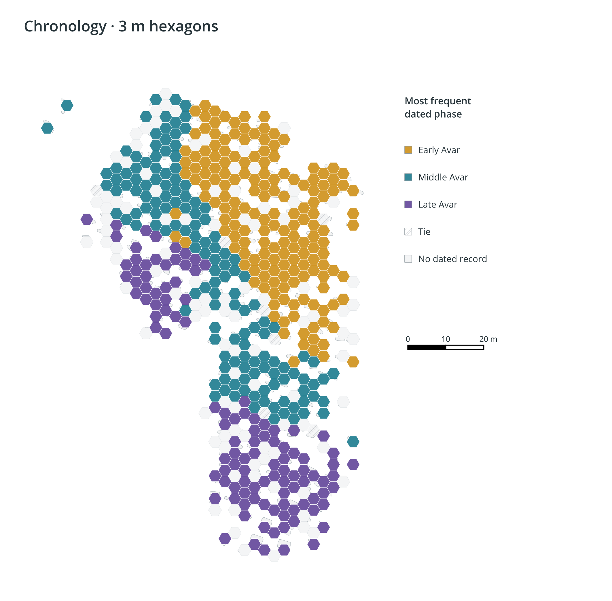

Visualization and Interpretation of the early medieval fEmale avar populatioN from Vienna/Austria (csokorgasse-buRialS).
Centering on the Avar-period cemetery of Vienna 11 – Csokorgasse (Kaiserebersdorf), the largest early medieval burial site discovered within Vienna with over 700 burials (7th–8th centuries AD). This web portal presents publication highlights, 3-meter hexbin spatial models, and metadata governance.
A teaser of core findings across physical anthropology, material culture, and cemetery organization of the Avar community in Vienna 11–Csokorgasse.
To visualize cemetery growth, social stratification, and chronology without disclosing sensitive individual coordinates, burials are aggregated into 3-meter hexagonal bins. All primary excavation geometries remain the intellectual property of the Wien Museum (© Wien Museum).

Permanent preservation, fair data curation, and controlled scientific access via the University of Vienna's official digital repository.
The digital research corpus of the VIENNAVARS project is preserved within PHAIDRA (Permanent Hosting, Archiving and Indexing of Digital Resources and Assets) under persistent identifier o:2091644 and registered DOI 10.25365/phaidra.537.
In accordance with ethical standards in archaeological heritage curation and formal agreements with the Wien Museum, raw individual osteological tables and primary trench vector geometries are curated under controlled access. Researchers may request access to full tabular datasets for verified academic studies.
Reference schema of data tables curated on PHAIDRA available for academic reuse requests:
| Dataset Entity | Content Description | Core Attributes | Access Level |
|---|---|---|---|
| Burials_Catalog | Grave dimensions, construction types, depth, orientation, and taphonomic context. | grave_id tomb_type orientation depth_m coffin_evidence | PHAIDRA / On Request |
| Osteological_Metrics | Skeletal analysis: sex, age class, stature estimation, pathologies, and LEH stress markers. | individual_id sex age_class stature_cm hypoplasia | PHAIDRA / On Request |
| Finds_Inventory | Costume items, earrings, polyhedral pendants, beads, spindle whorls, pottery, tools. | find_id category material typology museum_inv | PHAIDRA / On Request |
| Spatial_Hexbins | 3-meter tessellated hexagon cells, dominant phase, and grave counts per cell. | hex_id dominant_phase grave_count male_count female_count | Open Aggregated |
When citing research data or spatial distributions from this project, please reference the official PHAIDRA repository record:
@dataset{viennavars_csokorgasse_2024,
author = {Hagmann, Dominik and Kirchengast, Sylvia and B{\"u}hler, Birgit},
title = {{VIENNAVARS : Visualization and Interpretation of the early medieval fEmale avar populatioN from Vienna/Austria (csokorgasse-buRialS)}},
year = {2024},
publisher = {PHAIDRA - University of Vienna},
doi = {10.25365/phaidra.537},
url = {https://phaidra.univie.ac.at/detail/o:2091644}
}